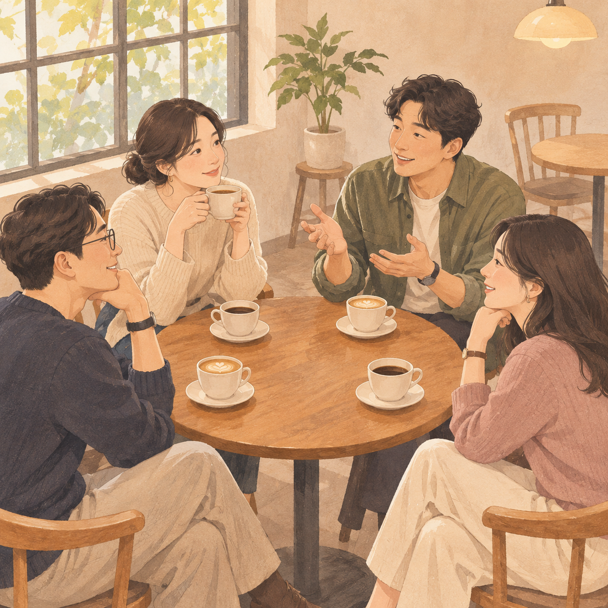

서로 다른 분야의 사람들이 만나는 곳
교차 테이블
각자의 분야에서 성장하는 사람들과
가끔 나누는 편안한 대화
서로의 경험과 관점을 나누는 소규모 모임

- 활동 지역
- 서울 강남권
- 연령 조건 · 출생연도 기준
- 1988~2000년생
- 전체 규모 · 운영자 포함
- 10~20명
- 비용 부담 · 참석자 균등 분담
- 1/N
모임 소개
각자의 일과 여력을 존중하는
부담 없는 만남
서로 다른 분야에서 경험과 역량을 쌓으며 성장을 이어가는 사람들이 가끔 만나 근황과 관심사, 경험을 나누는 소규모 모임입니다. 다른 분야의 경험과 관점을 접하며 서로에게 배움과 새로운 자극이 되는 교류를 지향합니다.
각자의 일과 여력을 존중하며, 부담 없는 만남과 편안한 대화를 추구합니다. 더 깊은 관계나 별도 교류·협업은 서로의 의사를 존중하는 범위에서 자유롭게 선택합니다.
시설·기계설비·사업관리, 복잡한 고민의 정리·설명,
학습·전환 과정의 경험
나누는 이야기와
교류 원칙
- 근황과 관심사,
일하면서 겪은 이야기 공유 - 평소 접하기 어려운
다른 분야의 경험 교환 - 아이디어와 일상의 고민에 대한
가벼운 대화 - 경험 범위 내 간단한
의견·정보·도움 공유
모집 분야
서로 다른 10개 분야의
경험과 관점
10개 분야에서 각 1~2명씩 함께합니다.
IT·AI·자동화
개발, 데이터·AI, 정보보안, 업무 자동화
부동산
중개, 개발, 임대·자산관리
금융·투자
기업금융, 증권, 자산운용
법률
변호사, 변리사, 기업법무
회계·세무
회계사, 세무사
인사·조직·노무
노무사, 인사·조직관리 전문가
마케팅·브랜딩
브랜드, 광고, 고객분석, 홍보
건설·엔지니어링
건축, 설비, 설계, 공사·사업관리
제조·유통·무역
제품개발, 생산, 소싱, 유통, 수출입
의료·헬스케어
의사, 약사, 헬스케어 분야 실무자
분야별로 보완할 전문성을 가진 구성원을 모십니다.
모집 인원과 구성
분야별 전문성을 보완하는
작은 규모의 교류
- 분야별 인원
- 10개 분야, 각 1~2명
- 초기 구성
- 운영자 포함 분야별 1명씩, 총 10명
- 추가 모집
- 분야별로 보완할 전문성을 가진 두 번째 구성원
- 최대 규모
- 분야별 2명, 전체 20명
모집 대상과
가입조건
- 모집 대상
- 사업가·자영업자, 전문직·프리랜서,
실무 전문가·직장인 - 연령 조건
- 1988~2000년생, 출생연도 기준
- 경험 공유
- 실제 수행한 일과 본인의 역할·성과를 구체적이고 이해하기 쉽게 정리·설명할 수 있는 분
- 성장 방향
- 구체적인 성장 목표가 있고, 앞으로의 방향을 명확하게 설명할 수 있는 분
- 교류 태도
- 자신의 경험을 나누고, 다른 분야의 경험과 관점도 듣고 배우려는 분
소득과 관계없이 실제 경험과 교류 적합성을 중심으로 개별 검토합니다.
모임 운영 안내
일정도 비용도
참여하는 사람들과 함께
- 활동 지역
서울 강남권
- 모임 방식
필요할 때, 서로 일정을 맞춰
정해진 주기 없이, 필요할 때 서로 일정 조율 후 모임
- 비용 부담
1/N참석자끼리 균등 분담
모임 발생 비용을 해당 모임 참석자끼리 나눕니다.
신청 방법과
가입 절차
내용 확인과 1:1 대화를 거쳐
가입 여부를 안내합니다.
운영자와 신청자가 서로를 알아가는 과정입니다.
당근 가입 신청·네이버 폼 제출
아래 당근 모임 링크로 들어와 가입을 신청해 주세요.
가입신청서 작성 내용은 네이버 폼으로 제출해 주세요.
네이버 폼에는 당근 활동명, 활동 분야, 실제 경험, 성장 목표, 나눌 내용과 참여 목적을 작성해 주세요.
제출 내용 검토 후, 오프라인 1:1 만남 진행 여부를 개별 안내합니다.
오프라인 1:1 대화
운영자와 신청자가 서로의 경험과 관심사를 나누며, 모임 취지와 교류 방향이 맞는지 확인합니다.
오프라인 1:1 만남에는 운영자와 신청자 모두 경력 소개 PPT를 준비합니다.
각자 대표 사례를 골라 당시 과제와 본인이 맡은 역할, 직접 판단하거나 실행한 일과 그 결과를 서로 설명합니다.
PPT의 분량과 디자인은 자유이며, 자료는 현장에서만 서로 열람합니다.
가입 여부 안내
신청 내용과 1:1 대화, 분야별 구성을 고려한 최종 가입 여부를 개별 안내합니다.
가입 승인 후 카카오톡 단체대화방으로 별도 초대
교차 테이블을 만든 이유와 운영 방향
① 만들고 싶은 교류
각자의 분야에서 일정한 경험과 역량을 쌓아온 사람들이, 서로 나눌 경험을 가지고 편안하게 교류할 자리가 필요해 교차 테이블을 만들었습니다.
어떤 문제를 만났고, 무엇을 기준으로 판단했으며, 그 과정에서 무엇을 배웠는지 나누면서 서로에게 새로운 관점과 자극이 되는 교류를 만들고자 합니다.
② 실제 경험과 역량을 보는 이유
구성원 각자가 실제 경험과 판단을 바탕으로 대화에 참여할 수 있도록, 실제 수행한 일과 본인의 역할·성과, 앞으로의 방향을 중요하게 봅니다. 나눌 수 있는 경험과 참여 목적도 함께 확인합니다.
경험을 제공하는 역할이 일부 구성원에게만 쏠리지 않고, 모두가 자신의 경험을 나누며 다른 사람에게도 배우는 모임을 지향하기 때문입니다.
③ 분야별 소수로 구성하는 이유
서로 다른 분야의 관점을 접하면서도, 각자가 어떤 일을 해왔고 어떤 생각을 하는지 알아갈 수 있는 규모를 유지하고자 합니다. 분야별로 소수의 구성원을 모아 다양한 경험이 함께하는 작은 교류를 만들겠습니다.
④ 신청서와 1:1 대화의 역할
신청서와 오프라인 1:1 대화를 통해 각자의 경험과 참여 목적, 기대하는 교류 방향을 서로 확인하고자 합니다. 함께하게 된 이후의 기대 차이를 줄이고, 서로의 이야기를 나누며 교류할 수 있을지 알아가는 과정으로 운영하겠습니다.
⑤ 함께 지킬 운영 원칙
각자의 일과 생활을 존중하며, 정해진 주기 없이 서로 여력이 될 때 일정을 조율하겠습니다.
의견과 도움은 직접 경험한 범위에서 가능한 만큼 나누고, 별도 교류나 협업은 서로의 의사에 따라 자유롭게 선택합니다.
모임과 개별 연락에서 원치 않는 권유나 반복적인 홍보에 부담을 느끼지 않도록 과도한 영업을 제한하겠습니다.
⑥ 운영자로서의 참여
저 역시 시설·기계설비·사업관리, 복잡한 고민을 정리하고 설명해 온 경험, 새로운 분야를 배우고 전환을 준비하는 과정의 경험을 나누겠습니다.
1:1 대화에서도 제 경험과 현재의 방향을 함께 말씀드리고, 모임에서는 다른 분야의 판단과 시행착오에서 배우는 구성원으로 참여하겠습니다.
⑦ 교류를 통해 기대하는 것
다른 분야의 사람들이 문제를 바라보고 판단하는 방식을 접하며, 익숙한 고민도 새로운 관점에서 생각해 볼 수 있기를 기대합니다.
자신의 경험을 다른 분야의 사람에게 설명하는 과정에서는, 스스로 해온 일과 판단의 근거를 돌아보고 정리하는 기회도 생길 수 있다고 봅니다.
이러한 대화가 쌓이면서 서로의 경험과 관심사를 이해하고, 근황과 고민을 편하게 나눌 수 있는 관계로 이어지기를 바랍니다.
경험을 나누는 이유
서로의 판단 과정을 이해하는 대화
경험을 나누는 가치는 어떤 조건에서 무엇을 고려했고, 왜 그 선택을 했는지 이해할 수 있다는 데 있다고 생각합니다. 직접 겪은 문제와 시행착오에는 다른 사람도 참고할 수 있는 판단의 근거가 담겨 있습니다.
① 결과 뒤에 있는 판단 과정
시설·기계설비 사업에서는 기술적 타당성과 함께 공사비·일정·시설사용 여건을 살펴야 했습니다. 어떤 조건을 검토하고 왜 그 방안을 선택했는지 설명할 때, 결과만으로는 보이지 않는 판단 과정이 드러납니다.
② 다른 분야에서 접하는 새로운 관점
다른 분야에서 문제를 바라보고 중요하게 보는 조건을 들으면, 익숙한 고민도 새로운 각도에서 생각해 볼 수 있습니다. 그 경험의 배경을 이해하며 자신의 상황에 참고할 부분을 찾아가는 데 의미가 있다고 봅니다.
③ 설명하면서 돌아보는 자신의 경험
다른 분야의 사람에게 경험을 설명하려면 당시 상황과 본인의 역할, 선택한 이유를 정리해야 합니다. 상대방의 질문을 통해 익숙해서 지나쳤던 부분이나 다시 보완할 점을 발견할 수도 있습니다.
④ 서로 나눌 경험이 있을 때 가능한 교류
각자가 직접 수행하고 판단해 본 경험을 가지고 참여하면, 서로 나눌 이야기와 질문할 내용이 생깁니다. 자신의 경험을 구체적으로 설명하는 역량과 다른 사람에게도 듣고 배우려는 태도가 함께할 때 의미 있는 교류로 이어질 수 있다고 생각합니다.
교차 테이블에서도 이런 대화를 함께 나누고자 합니다.